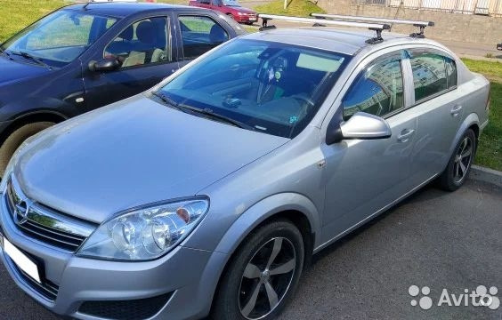

Добрый день, коллеги, подскажите пожалуйста, хочу установить на свой седан
багажник, но на всех сайтах
багажники на штатное место либо на хетчбек либо на универсал, на седан нет,
во и возник вопрос,
одинаковые ли посадочные места у хетчбека и седана?
Подойдёт ли багажник от хетчбека на седан?
Можно заказать оригинальный, но его ждать долго в середине августа придёт, вот
может кто что знает и что-то посоветует?
Заранее благодарен всем откликнувшимся!
Описание проблемы
Комментарии
- От хетчбека втаёт. На универсале на крыше релинги, багажник крепится по другому.
-
- Спасибо за информацию! 🤝
- Не на всех универсалах рейлинги
- Багажник на седан… Надо на универсал менять …
-
- Может сразу фуру купить?